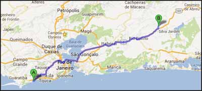
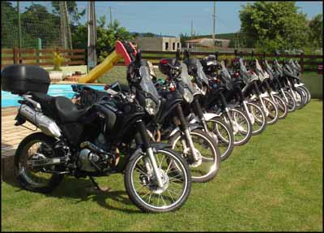
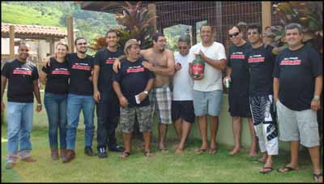
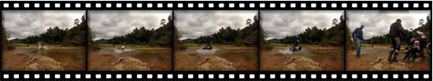
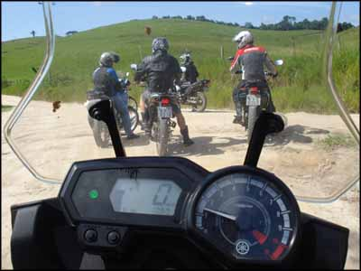
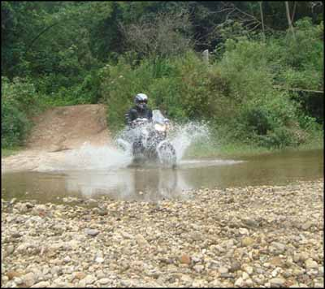
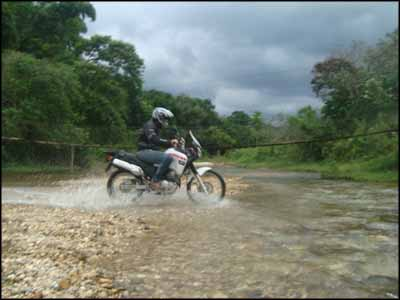

Moto nova, empolgação renovada. Aproveitei para me enfiar em um passeio programado no fórum Tenere Club. A programação incluía churrasco no sítio de um dos participantes, que fica no município de Silva Jardim, no Estado do Rio.
O grupo se encontrou às 08:00h na Praça da Bandeira, conheci alguns dos participantes, todos de Tenere 250, e de lá seguimos. Fomos num ritmo bem calmo, raramente passando dos 100km/h. Paramos ainda em São Gonçalo, onde mais motos se juntaram ao grupo e continuamos viagem.
Chegamos bem rápido no destino, confraternização, bate papo com novos colegas, todos muito gente boa. E o mais bacana, gente de todas as idades. Mais velhos que eu, mais novos do que eu. O churrasco rolou a tarde toda, muitas fotos e risadas, chegou a noite, acabou a cerveja, compramos mais, e por aí vai. Até que o cansaço forçou aterrisagem na barraca.
 No dia seguinte, a parte mais divertida, sem dúvida. Fomos cinco motos procurar as estradas de terra da região, travessias de rios, lama e desafios. E encontramos.
Fizemos umas 3 horas de off road com as valentes Teneres, quase nenhuma queda no grupo, e muita história para contar e para rir.
  Depois só restou voltar para o acampamento, recolher a barraca, e pé na estrada de volta. Foi um ótimo primeiro passeio com a nova motoca!